A full navigation course — the last line ashore to the first line at the next port, in the order it really happens.
Most navigation training tells you what the rules say. Almost none of it tells you what the job feels like at the moment you have to do it — which order things happen in, what you write down and where, who you call and when, and what somebody checks when they step onto your bridge. Port to Port is that missing conversation, taught by a serving Second Officer.
8 lessons are free — these two play right here, all 8 in the app with a free account, no card. The rest unlock with Seaman Pro, or when you buy the course.
Tap a chapter to see its lessons. Chapter 03 is open — it holds two of the 8 free lessons; the others are marked ▶ Free.
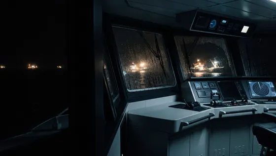
00 Introduction: How This Mentorship Works ›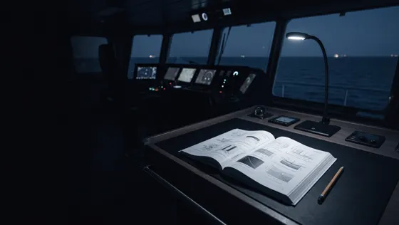
The gap between the book and the bridge🔒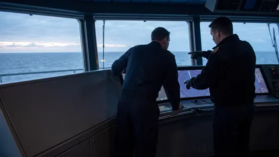
How we will balance theory and practice🔒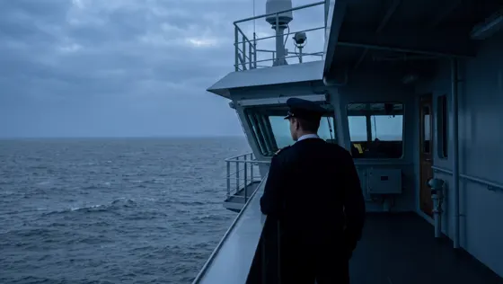
What to expect of yourself🔒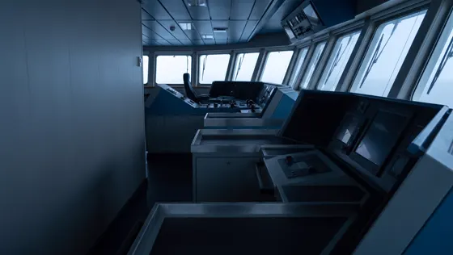
01 Foundations: The Ground You Stand On ›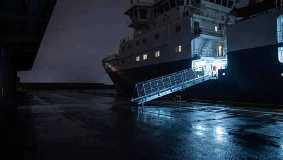
The conventions that touch your watch🔒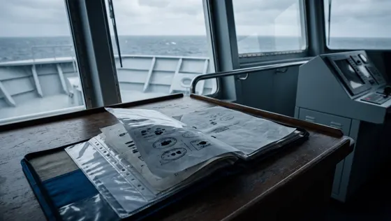
The ship's authority to sail🔒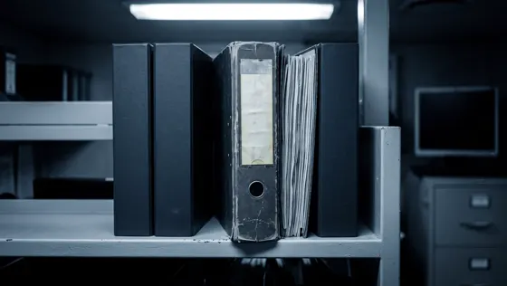
The SMS, your company's law🔒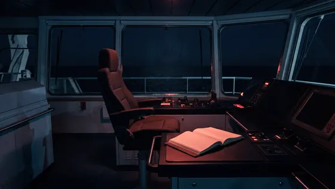
The Master, and the orders he writes down🔒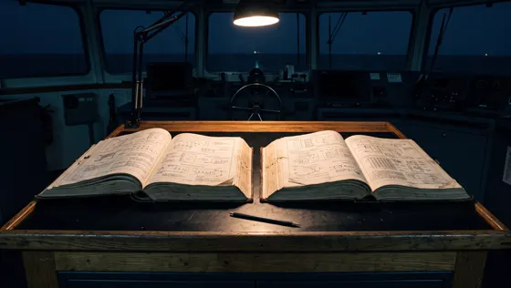
So which one wins? — resolving conflicts🔒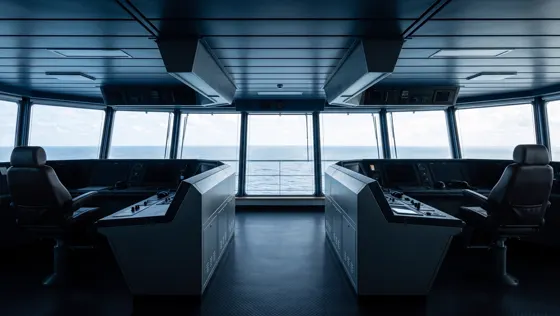
02 The Bridge and Your Instruments ›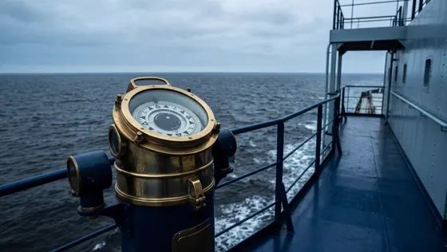
The compasses — gyro, magnetic, error, and the daily check🔒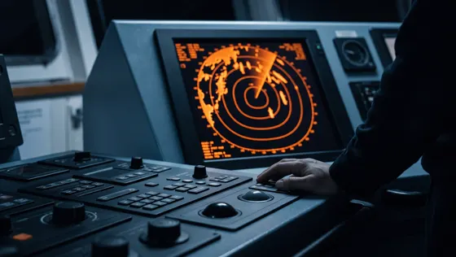
Radar and ARPA — what it sees, what it misses, how you set it up🔒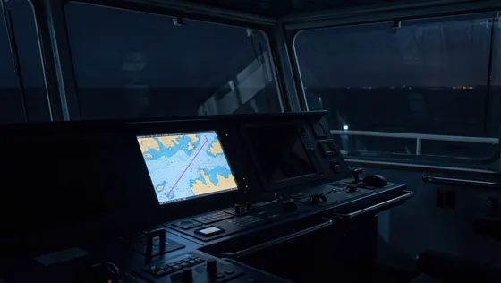
ECDIS — the chart, the settings that matter, the alarms that save you🔒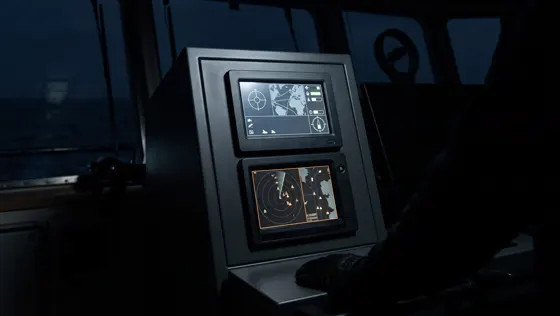
GNSS and AIS — position and identity, and how both lie🔒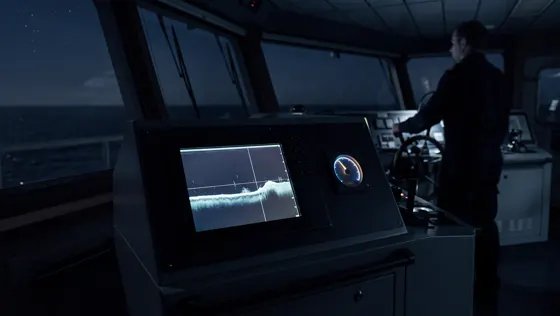
Echo sounder, speed log, and the numbers you trust🔒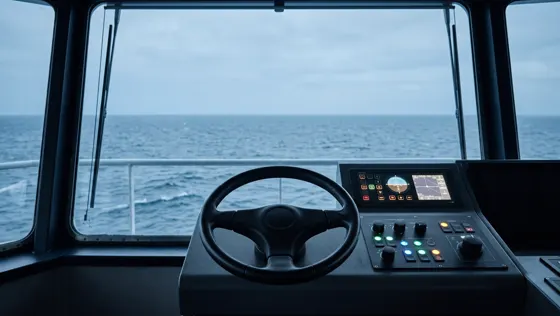
Steering — modes, autopilot, hand steering, and the changeover🔒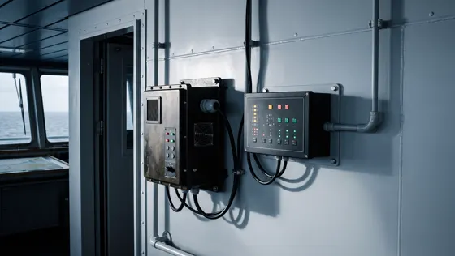
BNWAS, VDR and the recorders that watch you🔒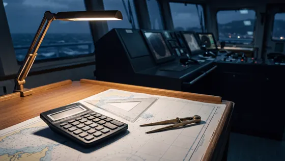
The tools that do the maths for you — and the ones that get you caught🔒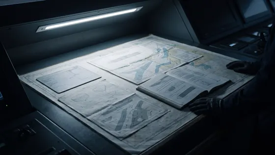
03 How Your Ship Handles ›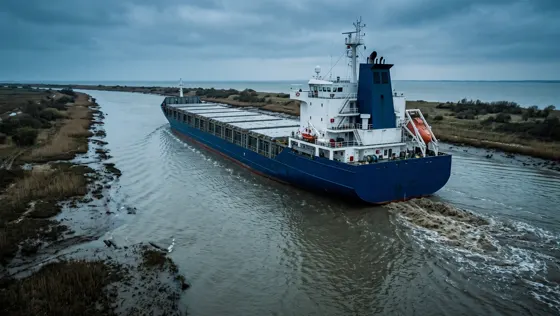
Shallow water, squat and interaction ▶ Free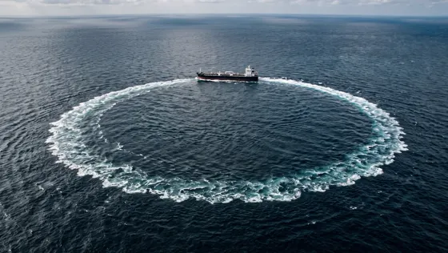
The emergency turns — Williamson, Anderson, Scharnov ▶ Free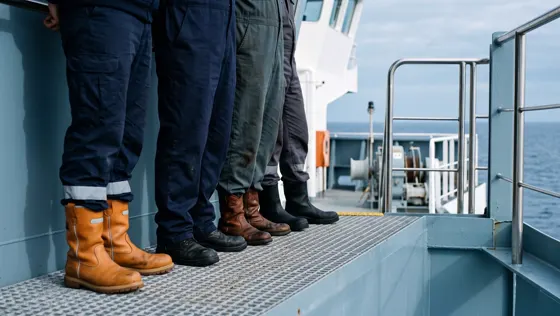
04 The Bridge Team ›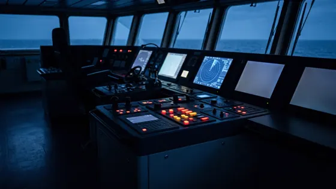
How accidents build — the error chain and situational awareness🔒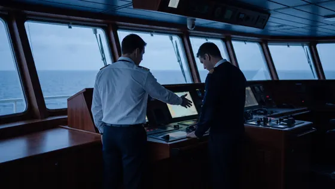
Saying it out loud — closed-loop communication, challenge and response🔒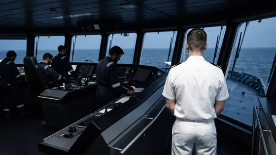
Being new — asking, admitting, and being corrected in front of people🔒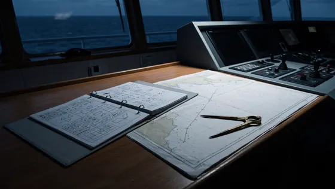
The passage plan you were handed — reading it, checking it, loading it🔒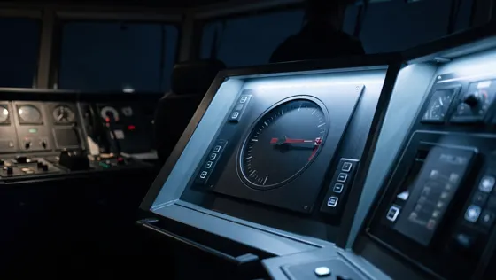
Steering gear tests — the one they always ask about🔒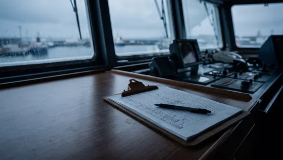
The pre-departure checklist — signing it honestly, and what "N/A" costs you🔒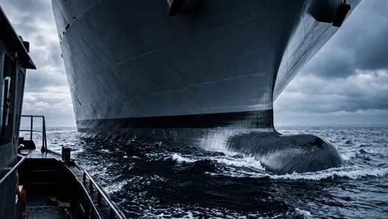
Draft, air draft and under-keel clearance — your sanity check🔒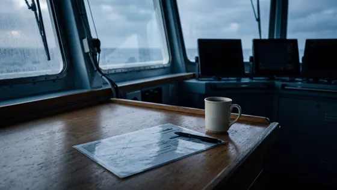
The Master–Pilot exchange — preparing the card🔒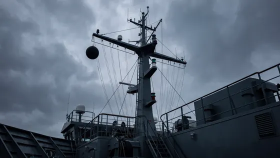
Squaring away — lights and shapes, flags, ETA and reports🔒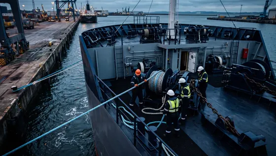
06 During Departure ›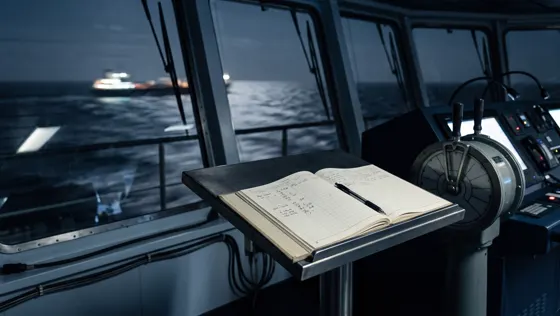
The bell book — what you write, when, in what words🔒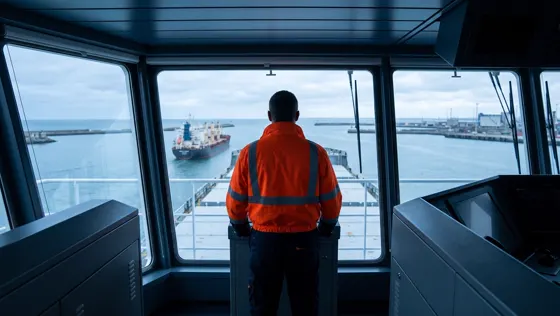
The pilot on your bridge — advice, the con, and monitoring🔒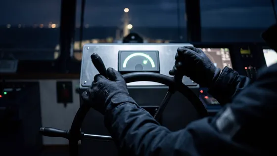
Helm orders — giving them, checking them, correcting them🔒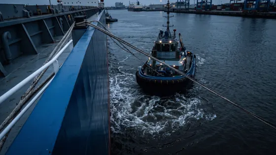
Tugs, lines, and the moments things go wrong🔒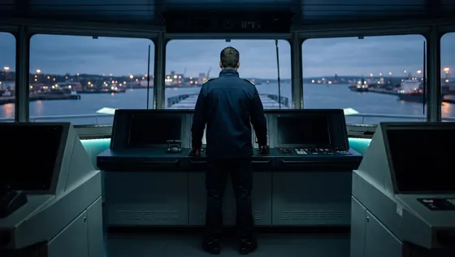
From stations to sea watch — the changeover and the log🔒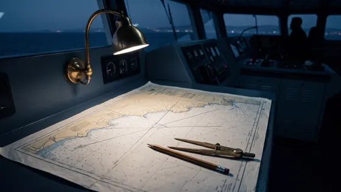
07 Knowing Where You Are ›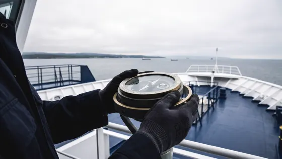
Visual fixes — bearings, transits, and the ones you can take fast🔒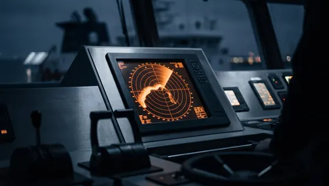
Radar fixing and parallel indexing🔒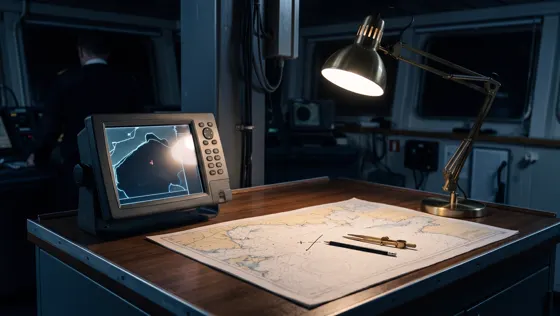
GNSS — using it, cross-checking it, knowing when it's wrong🔒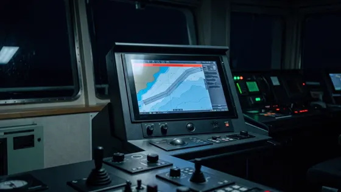
Monitoring on ECDIS — XTD, safety contour, alarms, and the check cycle🔒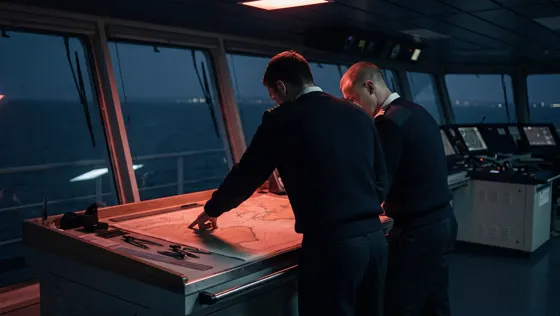
08 The Bridge Watch: Coastal · Open Sea · Ocean ›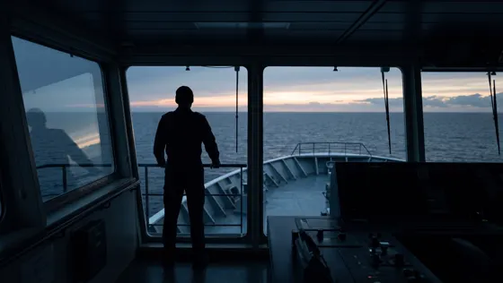
The watch you owe — STCW watchkeeping in plain language🔒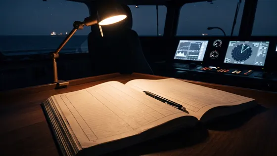
The deck logbook — what you write, what you never write, how to correct it🔒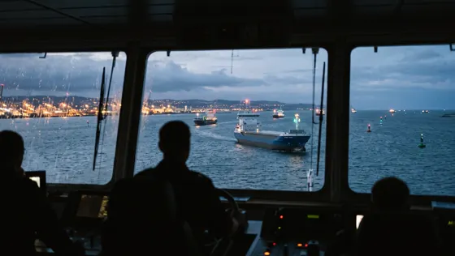
The coastal watch — traffic, TSS, pilotage waters, close quarters🔒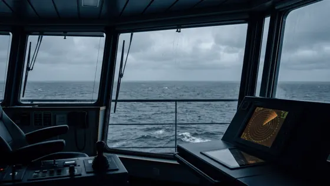
The open-sea watch — rhythm, routine checks, staying awake to it🔒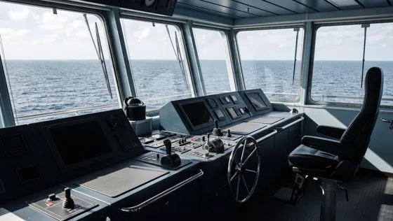
The ocean watch and the noon report🔒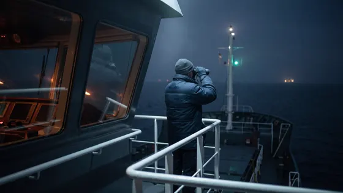
The lookout — posting one, using one, managing an AB🔒The three lanes at the end are the same voyage seen from your own deck — what changes when the cargo is grain, crude or boxes. Lessons marked in production are written and being filmed; they land in your account as each is finished.
You were taught the rules. You were never shown the watch.
The exams assume a conversation with a senior officer that, for most of us, never happened.
COLREGs and SOLAS are on your ship already. What is missing is what a competent officer does with them at 0345 in traffic.
Preparation, departure, the passage, the watch, arrival — the sequence you will live, not a syllabus sorted by subject.
Taught by a serving Second Officer, in the words a senior would actually use on the bridge wing.
Someone who stood the watch this contract — who knows what the Master will call you about at 0200, which alarm you will learn to ignore and why that is the dangerous one, and what a pilot expects to find when he steps onto your bridge.
Simplified Maritime has taught Filipino officers on Facebook for years, and the Navigators Club community is now more than 1,900 seafarers. Port to Port is that same voice, written down properly and filmed.

Most courses assume you are ashore on wifi. This one assumes you are three days off the coast with a satellite link you have been told not to waste.
Pull the chapters onto your phone alongside, then watch them mid-ocean with the data off. The whole app is offline-first.
The films are protected, so they play in the Seaman App on Android (or in Safari on an iPhone). The reading, handouts and your progress are also on the web at app.seamanapp.com — same account, same place in the course.
Yours for as long as you subscribe — or for two years if you buy the course outright. Come back to the arrival chapter the night before you actually do one — that is when it means the most.
Port to Port is part of the Seaman Pro library, together with The Other Half. Subscribe and both are yours, plus everything we add — or pay once and own just this course.
One monthly plan, cancel anytime. On the web it is $9.99 a month through PayPal; in the Android app it is billed by Google Play, priced for your country.
No free trial — the 8 free lessons are the taster. Cancel any time.
One payment, two years of access to Port to Port only. The price while the course is still being built.
▣ QR Ph Scan with GCash, Maya or any bank app.
Outside the Philippines? Pay $50 with PayPal
Would rather send the money to a person? We can enrol you by hand.
Create a free Seaman App account. Subscribe to Seaman Pro for the whole library, or pay once for this course by scanning the QR Ph code with GCash, Maya or your bank app.
Install the Seaman App on Android and sign in — that is where the videos play. On an iPhone, watch in Safari at app.seamanapp.com.
Start with the 99 lessons that are out. Download them in port and study them on passage, offline. The remaining chapters appear as they are finished.
99 of 112 lessons — about 13 h 8 min — are complete and watchable now: 16 of the 19 chapters, the whole voyage from the introduction to "When They Come Aboard". Only the 3 ship-type lanes (bulk, tanker, container) are still in production, and they appear in your account as they are finished.
One subscription for the English course library in the Seaman App: Port to Port, The Other Half, and every course we add. One monthly plan, cancel anytime. On the web it is $9.99 a month through PayPal; in the Android app it is billed by Google Play, priced for your country. There is no free trial; the 8 free lessons on this course are the taster.
If you want only Port to Port and plan to take your time, buy it once for ₱3,250 and keep it for two years. If you want The Other Half too, or want everything we add, Seaman Pro is cheaper by the end of the first month.
Chapters are filmed and released in voyage order, and we publish each one when it is finished rather than promising a date we might miss. Two years of access — or a subscription — comfortably covers the build.
No. It's honest peer-to-peer mentorship from a serving officer. It confers no certificate and no endorsement, and it doesn't replace your company's SMS or the officer teaching you onboard. It's the conversation the certificates assume you already had.
Yes. Download the videos in port on the Android app and watch them mid-ocean. The whole app is built offline-first for a ship's connection.
Entry to intermediate — cadets, new OOWs, and anyone who knows the theory but wants to know how the watch actually runs. There are dedicated lanes for bulk, tanker and container ships.
Seaman Pro: subscribe in the app — Google Play on Android, PayPal on the web. Buying the course outright: tap Buy Port to Port and scan the QR Ph code with GCash, Maya or any bank app; your access unlocks by itself, usually within a minute. Paying from outside the Philippines? PayPal is $50. And if you would rather send the money to a person, we can enrol you by hand.